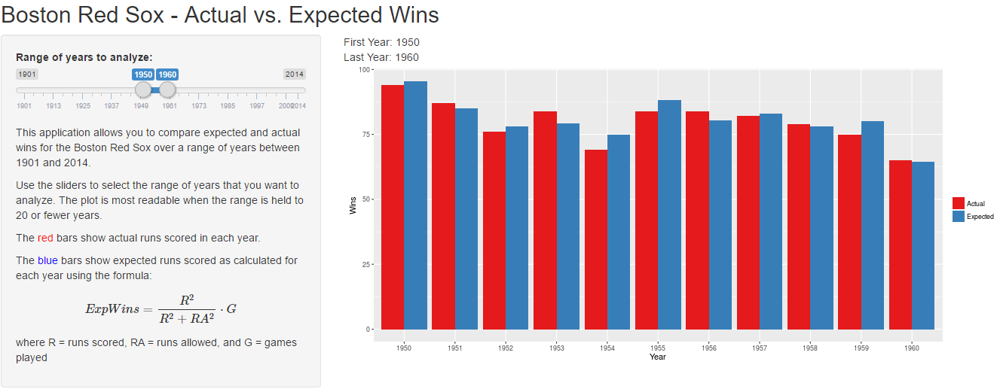
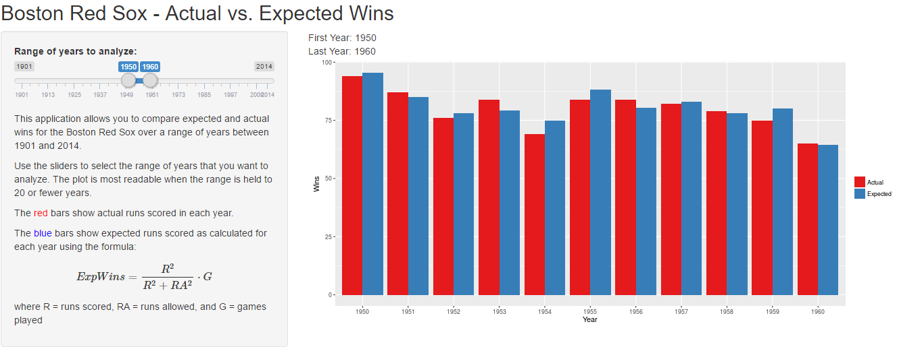

Dave Richards
Coursera - Developing Data Products

We use the Pythagorean Expectation formula, which was invented by baseball writer and statistician Bill James. You can read more about the formula at https://en.wikipedia.org/wiki/Pythagorean_expectation.
The formula is:
\[ExpWins = \frac{R^2}{R^2 + RA^2}\ \cdot G\]
where R = runs scored, RA = runs allowed, and G = games played
In 1901, the Red Sox played 138 games, in which they scored 759 runs and allowed 608 runs. Plugging the numbers into the formula, we get:
\[ExpWins = \frac{759^2}{759^2 + 608^2}\ \cdot 138\]
round((((759^2) / (759^2 + 608^2)) * 138), 2)
## [1] 84.06
This compares with the Red Sox' actual win total of 79.
Empirically, this formula correlates fairly well with how baseball teams actually perform. Differences between expected and actual wins might be explained by one or more of these factors:
Details at https://en.wikipedia.org/wiki/Pythagorean_expectation